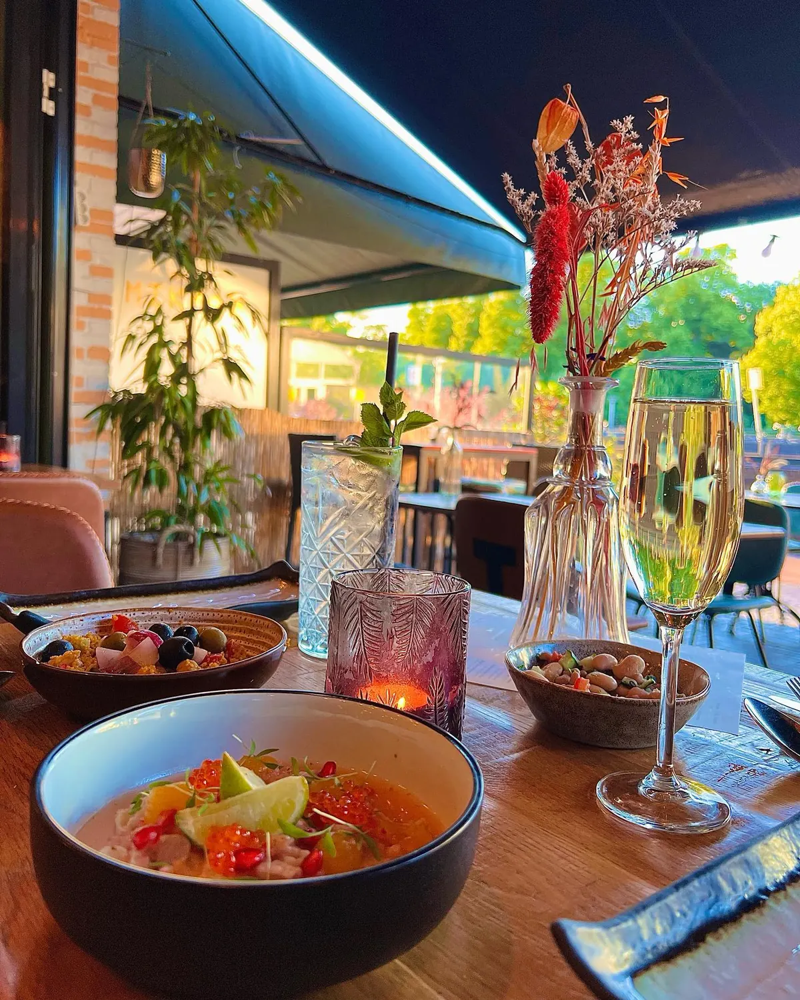

Lekker lunchen in Nijmegen, dit zijn de beste plekjes
Gepubliceerd op 18 oktober 2022, bijgewerkt op 20 februari 2024
Onderdeel van de gids Restaurants in Nijmegen

Plannen voor een dagje Nijmegen? Een lunch mag dan natuurlijk niet ontbreken! De keuze is bijna oneindig als je een leuke plek zoekt om te lunchen in Nijmegen. Vooral in het centrum vind je heel veel leuke locaties voor een lunch. En trouwens ook in de diverse andere stadsdelen van Nijmegen vind je de leukste plekjes voor een snelle of uitgebreide lunch, maar daarover een andere keer! Ga vooral zelf op ontdekking in Nijmegen, maar als je trek hebt kun je ook meteen een van deze drie tips om te lunchen in Nijmegen uitproberen. Van alles wat: een lunchcafé midden in het centrum, een eetbar met wereldse allure en jazeker: een strandpaviljoen.
Lunchen in Nijmegen onder de Sint-Stevenstoren
Lunchen op de Grote Markt in Nijmegen doe je bij De Bruijn – pal onder de Sint-Stevenstoren. Je kunt er terecht voor een uitgebreide lunch, maar ook voor een compleet ontbijtje zit je er goed: vanaf 08.30 word je op je wenken bediend. Het leuke aan de lunchkaart is dat er allerlei kleine gerechtjes op staan, waarmee je zelf een lunch naar smaak en eetlust kunt samenstellen. Voor het ontbijt kun je kiezen uit een klein ontbijtje of een de luxe variant. Lunchcafé De Bruijn schenkt bovendien voortreffelijke koffies in allerlei varianten.
Op zaterdag is het gezellig druk op de Grote Markt in Nijmegen, dan is er markt. Genoeg te kijken dus en als je wilt, kun je nog even rondneuzen op de kramen van de waren- en stoffenmarkt.
Heerlijk genieten in een eetcafé
Werelds lunchen (en ook dineren) doe je in Nijmegen bij eetbar MikMak … Naar eigen zeggen mikt de eetbar op de fijne smaken uit de diverse straten van de wereld. De hele … je voelt ’m al. Van de gevarieerde kaart kun je van alles combineren – je kiest zelf een aantal gerechten (formaat tussengerecht) – of je kiest voor het veelzijdige wereldmenu, met daarbinnen ook nog weer wat te kiezen. Ook staat er een aantal vega(n) aanraders op het menu. Het wereldmenu kun je ook nog uitbreiden met een bijpassend speciaal biermenu.

Lekker relaxen aan het water
Toegegeven, we smokkelen hier een beetje, maar deze toffe locatie voor lunch in Nijmegen zou je anders misschien missen, zonde! Strandpaviljoen Dushi 2.0 ligt Iets zuidelijker dan Nijmegen, aan de Mookerplas, in de kop van Noord-Limburg. Lunch aan het water, dat geeft zo’n lekker luxe gevoel! Op de kaart staan volop lunchgerechten, voorgerechten en hoofdgerechten. Het paviljoen heeft een eigen strand en aanlegsteiger. Lunchen, snacken, borrelen of dineren alsof je op vakantie bent …